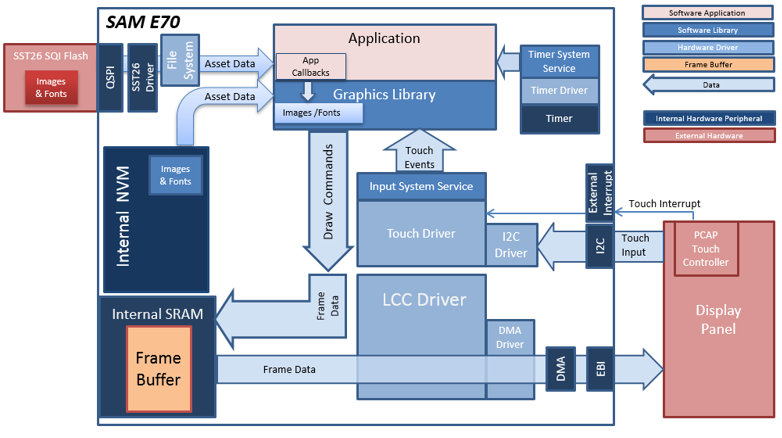
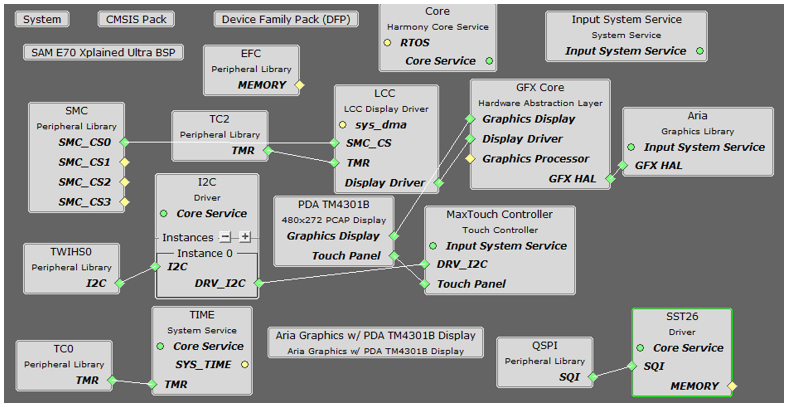
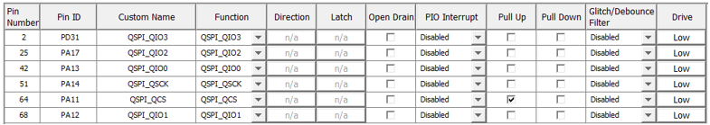

The aria_quickstart_external_resources (external flash reader) application uses the reads previously programmed binary data from the external non-volatile SQI memory. The Graphics Library is used to render graphics to the display. Using the DMA, the Low-Cost Controllerless (LCC) Display Driver continuously transfers frame data from the frame buffer out to the LCD display.
The application also features user touch input through the integrated touch screen on the display panel. Touch input from the touch controller goes through the I2C port, and the Input System Service acquires the touch input information from the Touch and I2C drivers. The Input System Service sends touch events to the Graphics Library, which processes these events and updates the frame data accordingly.
This configuration runs on the PIC32MZ DA Internal DDR Starter Kit with the MEB-II and WQVGA display. The frame buffer is stored in the internal SRAM, and the Low-Cost Controllerless (LCC) display driver is used to manage the DMA that transfers the frame buffer content to the display via the EBI peripheral.
User touch input on the display panel is received thru the PCAP capacitive touch controller, which sends a notification to the Touch Input Driver. The Touch Input Driver reads the touch information over I2C and sends the touch event to the Graphics Library thru the Input System Service.
The application reads the binary data from the external non-volatile memory via the QSPI peripheral configured with the SST26 driver.
Demonstration Features
- Aria Graphics Library
- Input system service and touch driver
- Time system service, timer-counter peripheral library and driver
- Low-Cost Controllerless driver
- 16-bit RGB565 color depth
- EBI peripheral library and driver
- I2C peripheral library and driver
- SST26 QSPI driver
- Images and Fonts for user interface stored in external flash (NVM)

The Project Graph diagram below shows the Harmony components that are included in this application. Lines between components are drawn to satisfy components that depend on a capability that another component provides.
Adding the “SAM E70 Xplained Ultra BSP” and “Aria Graphics w/ PDA TM4301b Display” Graphics Template component into the project graph.
This will automatically add the components needed for a graphics project and resolve their dependencies. It will also configure the pins needed to drive the external peripherals like the display and the touch controller.
Additional components to support QSPI and SST26 needs to be added and connected manually.
For QSPI access, make sure all 6 pins for QSPI is mapped.

The parent directory for this application is gfx/apps/aria_quickstart_ext_res. To build this application, open the gfx/apps/aria_quickstart_ext_res/firmware/aria_qs_x_r_e70_xu_tm4301b.X project file in MPLABX IDE that corresponds to the hardware configuration.
The following table lists configuration properties:
|
Project Name |
BSP Used |
Graphics Template Used |
Description |
|
aria_qs_x_r_e70_xu_tm4301b.X |
SAM E70 Xplained Ultra |
Aria Graphics w/ PDA TM4301b Display |
SAM E70 Xplained Ultra with 4.3” WQVGA PCAP Touch display |
 Important! Important! |
This application may contain custom code that is marked by the comments // START OF CUSTOM CODE ... and // END OF CUSTOM CODE. When using the MPLAB Harmony Configurator to regenerate the application code, use the "ALL" merging strategy and do not remove or replace the custom code. |
The final setup should be:

Configuring the 4.3” WQVGA Display requires disconnecting the ribbon cable that connects the display to the interposer board.

First, release the ribbon cable from the interposer board. Next, release the black clamp on the E70’s J2 connector and turn the display over. Finally, insert the ribbon cable into J2 and close the clamp.

The board and display are powered by a Micro B – USB A cable from PC to the “Debug USB” port on the E70 board. The ICD4 Debugger and ICD4/PICKit4 Adapter Board are connected as shown above.
When power-on is successful, the following screen will appear on the display

Pressing the button will cause the application to load a new image. The image cycles in order from Uncompressed RAW with Direct Blit, Uncompressed RAW, Run-Length Encoded (RLE) RAW, to JPEG.
The MPLAB Harmony Graphics Suite logo is also a button. Pressing the logo will toggle the application between English and Simplified Chinese.
Note that all images and glyphs are retrieved from external NVM via QSPI. The application is purposely setup in single-buffer configuration to allow visual inspection of the data retrieval speed of the various images and glyphs.
|
MPLAB® Harmony Graphics Suite
|